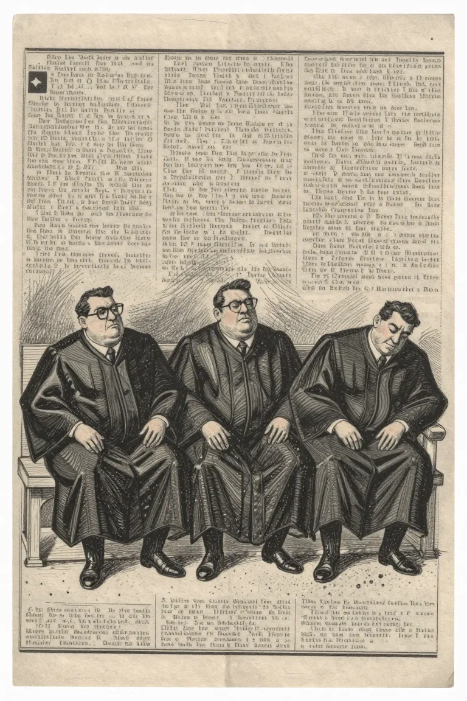

Художник рисует жирным литографским карандашом прямо на зернистом известняке, и зерно камня превращает штрих в чёрную крапинку. Оттиск хранит нажим рисунка, от бледного зерна до плотного чёрного, без гравированной линии.

Главная идея
Жирный карандаш на зернистом камне хранит нажим руки, и рисунок печатается как нарисован, без гравёра между ним и бумагой.
Принципы дизайна
Рисуйте чёрным карандашом по зернистому камню; сильнее нажим даёт более тёмный тон.
Пусть зерно камня крапит светлые тоны, примерно 80 зёрен на дюйм.
Выскабливайте белое из чёрного иглой или лезвием.
Добавляйте подпись литографским письмом под картинкой той же краской.
Печатайте одной чёрной краской на тонкой бумаге, чтобы тираж шёл тысячами.
Держите края мягкими и растушёванными; не обводите жёсткий контур.